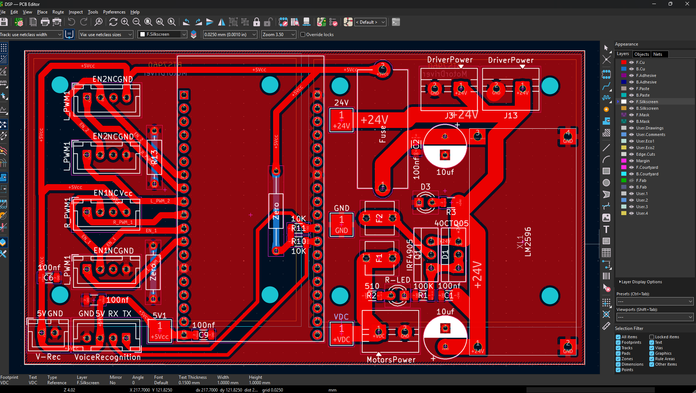
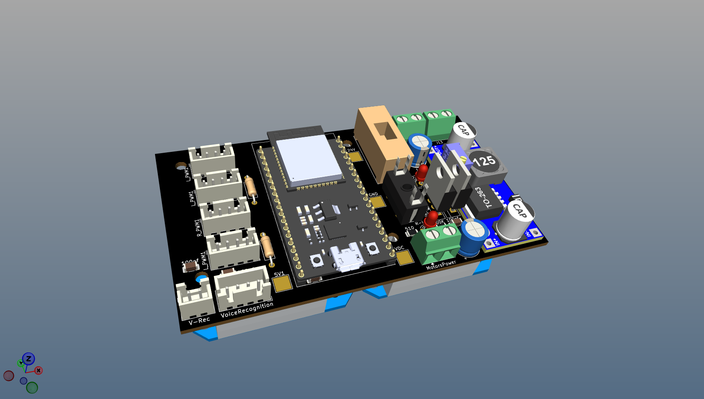
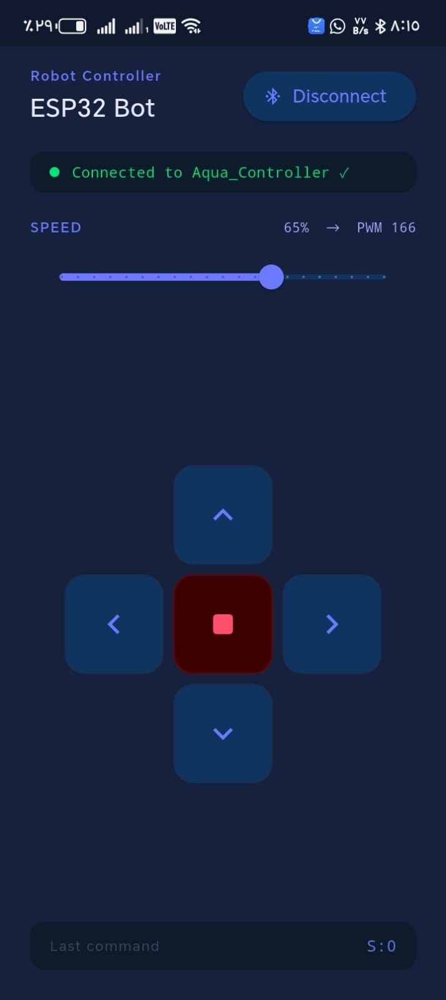

Overview
Designed a high-current 40A controller PCB purpose-built for the demanding load requirements of a motorized wheelchair. The board handles substantial current draw from dual drive motors while maintaining precise speed and direction control.
Full protection suite is integrated on-board: overcurrent, overvoltage, and thermal shutdown circuits safeguard both the electronics and the user. The design prioritizes reliability and fault tolerance, as the wheelchair is a safety-critical application.
Developed firmware and a voice-controlled mobile application enabling hands-free navigation commands — making the wheelchair fully operable for users with limited upper-body mobility. The mobile app communicates over Bluetooth for real-time command relay and status monitoring.
Technologies
Gallery


